Which inputs work best for the ERA5-trained demand model (stage 1a)?
We asked which extra inputs most improve a model that turns weather into electricity demand, beyond the weather itself. We tried the hour of day and day of week, a flag for the COVID period, weighting recent years more heavily, and windchill, and compared each with a model given only weather, on 16 Primary substations (substations that step power down to the local distribution network) over a selection year (July 2024 to June 2025, used to choose the inputs) and a confirmation year (July 2025 to June 2026, used to check the choice). Hour of day and day of week helped most, by about a third of the gain we had predicted, and windchill made almost no difference.
Verdict: partly supported. For the Primary substations, the clock (hour of day and day of week) is the largest single input against the weather block alone (W) (-0.55 points of capacity on the selection year and -0.46 on the confirmation year), a third of the 1.5 points the hypothesis predicted. Restricting the verdict to Primary was decided after the plan, at the planning session's request and before the confirmation year was scored; the plan's contrasts were not split by type. Across all series the clock leads on point estimates only (-0.51 against -0.45 for recency weights and -0.40 for the COVID indicator, each against W on the selection year), with no paired interval between them. For the two grid supply points (GSP) the hypothesis fails: the COVID indicator beats the clock, and the clock is not material. Windchill changes the error by less than 0.05 points, as predicted. The hypothesis lists columns, so this page counts recency weights as a training choice and not as an input.
Primary substations are the headline, because NGED cares most about them. Every score below is split by substation type, and no mean over all types is quoted as a result, because the two grid supply points (GSP) have errors about four times those of the Primary substations and would dominate it. A point is 1% of the series' effective capacity, and every score is the mean absolute error of the median. The substations are labelled P1 to P16, B1 and B2, and G1 and G2; no identifier, name, or coordinate appears on this page.

What to use for each substation type
The Primary set is the weather block, the clock, a COVID indicator, and the days to Christmas. Greedy forward selection on the selection year (2024-07 to 2025-06) was run for each substation type, starting from the weather block W plus the clock, and stopped when the next addition gained less than 0.1 points. The sets differ by type, and BSP (bulk supply points) and GSP have only two series each:
| Substation type | Columns added to W plus the clock, in the order selected | Series |
|---|---|---|
| Primary | COVID indicator, then days to 25 December (-0.25, then -0.14 points) | 13 |
| BSP | holiday flags: the day, the day before, and the day after (-0.16 points) | 2 |
| GSP | COVID indicator, days to the nearest holiday, heating degree-hours (-1.67, -0.24, -0.14 points) | 2 |
| One set for all three types (recommended if a single set is required) | COVID indicator, days to Christmas inside a 14-day window | 18 |
If one set must serve all three types, use the weather block, the clock, the COVID indicator, and the days to Christmas inside a 14-day window, and weight Primary substations' evidence above that of BSP and GSP. The clock is the largest gain for Primary substations and helps BSP, and its small effect on GSP has an interval that includes zero. The COVID indicator gains -0.26 points for Primary (99.4% interval -0.40 to -0.10) and -1.74 for GSP (-2.76 to -0.69) on the selection year, and is neutral for BSP (-0.02). The days to Christmas gains little over a year (-0.10 for Primary on the confirmation year) and a lot at Christmas: inside 15 December to 7 January it lowers the Primary error by 1.78 points, in each of three years (see the special-day windows below). The column is windowed, meaning it takes the days to 25 December inside 14 days of it and is missing otherwise, because the unwindowed column also marks the half-year, and in the summer school holidays it raises the BSP error by 0.43 points and the GSP error by 2.22. The holiday flags are left out because only BSP selected them, and they raise the BSP and GSP error at Easter. On the confirmation year this set scores 7.61 for Primary, 9.34 for BSP, and 26.65 for GSP, against 7.57, 9.41, and 26.47 for the Primary set with the unwindowed days to Christmas. The BSP set scores 9.53 and the GSP set 27.71, so for those two types the single set beats the set chosen for the type. Recency weights are a training choice, not a column, and are unaffected by this recommendation.
The clock helps Primary substations and BSP but not GSP. On the confirmation year the clock changes the error by -0.46 for Primary (99.4% interval -0.61 to -0.30), -0.30 for BSP (-0.41 to -0.17), and -0.08 for GSP (-0.43 to +0.27, against W).
Only the Primary set was written into this page before anything was scored on 2025-07 to
2026-06. The BSP and GSP sets were selected before the confirmation fits but were not written into
the page until after scoring, so their confirmation rows are not pre-committed. The first selection,
over all series, chose the days to the nearest holiday where the Primary-only selection chose the
days to Christmas, and the Primary-only set replaced it before the confirmation year was scored. The
discarded set scores slightly lower on the confirmation year (7.53 against 7.57 for Primary, and
7.04 against 7.11 with recency weights), a difference inside the noise. The Primary set's columns
are hour_local, day_of_week_local, covid_indicator (1 from 2020-03-23 to 2021-07-19, and 0 in
all later data, so it reads 0 at forecast time), and days_to_christmas (days to 25 December,
negative after it, clipped to 14 days either way). Only days_to_christmas is outside the set of
derived columns the stage 1 pilot already had. Each column is computable at forecast time from the
calendar alone.
Dropping one group at a time from the Primary set shows the clock and the COVID indicator matter most. On the selection year, removing the clock raised the Primary error by 0.59 points (95% interval +0.49 to +0.69), removing the COVID indicator by 0.30 (+0.20 to +0.40), and removing the days to Christmas by 0.14 (-0.06 to +0.35), so the Christmas column is the least certain member of the set (see the Christmas control below).
Absolute scores on the confirmation year (2025-07 to 2026-06)
Every Primary arm that adds columns to the weather block scores lower than the weather block alone. The table gives the mean absolute error of the median in points of capacity, with 95% intervals that resample whole months, averaged over three fitting seeds, one XGBoost model per series. The confirmation year scores 14 Primary, two BSP, and two GSP series. The selection year scores 13, two, and two, and a series with under a year of history before a fold is left out of that fold.
| Arm | Primary (14) | BSP (2) | GSP (2) |
|---|---|---|---|
| Climatology (month, half-hour, weekend) | 8.93 (8.61 to 9.28) | 13.11 (12.02 to 14.27) | 36.62 (33.86 to 39.24) |
| Weather block W | 8.31 (8.00 to 8.61) | 9.90 (9.01 to 10.85) | 30.05 (27.83 to 32.22) |
| W plus clock | 7.85 (7.48 to 8.23) | 9.60 (8.71 to 10.58) | 29.97 (27.83 to 32.02) |
| Primary set (W, clock, COVID, Christmas) | 7.57 (7.29 to 7.85) | 9.41 (8.57 to 10.26) | 26.47 (25.07 to 27.84) |
| Primary set, recent years weighted more | 7.11 (6.84 to 7.39) | 9.04 (8.36 to 9.74) | 23.98 (22.56 to 25.16) |
| Primary set, trained from 2023-09 | 6.71 (6.37 to 7.10) | 8.99 (8.44 to 9.52) | 21.73 (19.35 to 23.87) |
| Primary set, weighted, from 2023-09 | 6.68 (6.36 to 7.05) | 8.98 (8.44 to 9.50) | 21.51 (19.12 to 23.68) |
| BSP set (W, clock, holiday flags) | 9.53 (8.57 to 10.59) | ||
| GSP set (W, clock, COVID, nearest holiday, heating) | 27.71 (25.75 to 29.56) |
The weather block, the weather block plus clock, and the Primary set each beat the climatology for every substation type. The paired 95% intervals exclude zero in every case. For Primary the differences are -0.62 (-0.94 to -0.31) for W, -1.07 (-1.42 to -0.73) for W plus clock, and -1.36 (-1.67 to -1.08) for the Primary set. The other arms score below the climatology too, but without a paired interval.
Planned contrasts
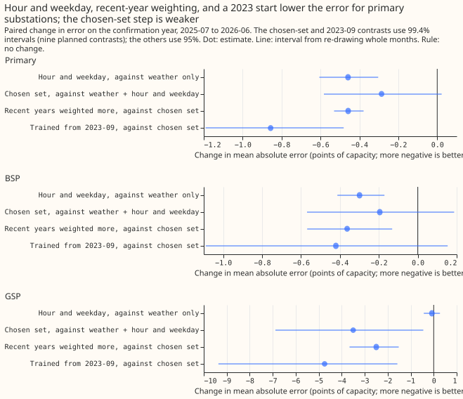
The contrasts P1 to P9 were fixed in the plan below before any fit. The intervals for the nine planned contrasts are Bonferroni-widened to 99.4%, and the table labels each interval's level. All numbers are changes in the mean absolute error for Primary substations, so negative is better, with three fitting seeds.
| Contrast | Year | Change | Interval | Material? |
|---|---|---|---|---|
| P1: clock against W | selection | -0.55 | -0.71 to -0.41 (99.4%) | yes |
| P1: clock against W | confirmation | -0.46 | -0.61 to -0.30 (99.4%) | yes |
| P2: one harmonic of time of year, against W plus clock | selection | +0.04 | -0.40 to +0.37 (99.4%) | no |
| P3: holiday flags, against W plus clock | selection | -0.11 | -0.21 to -0.02 (99.4%) | marginal (0.106 against the 0.1 floor), and not material on the second selection year |
| P4: previous-24-hour mean temperature | selection | +0.04 | -0.01 to +0.08 (99.4%) | no (slightly worse) |
| P5: guarded windchill, against W | selection | +0.003 | -0.011 to +0.016 (99.4%) | no effect |
| P6: COVID indicator | selection | -0.26 | -0.40 to -0.10 (99.4%) | yes |
| P7: recency weights | selection | -0.32 | -0.49 to -0.13 (99.4%) | yes |
| P8: Primary set against W plus clock | selection | -0.40 | -0.73 to -0.10 (99.4%) | yes, but the set was chosen on this year |
| P8: Primary set against W plus clock | confirmation | -0.29 | -0.58 to +0.02 (99.4%); -0.50 to -0.07 (95%) | not at the planned level |
| P9: trained from 2023-09, against the full history | selection | -0.05 | -0.60 to +0.59 (99.4%) | no |
| P9: trained from 2023-09, against the full history | confirmation | -0.86 | -1.19 to -0.48 (99.4%) | yes |
The selection and confirmation years score different series. The confirmation year scores 14 Primary series and each selection year 13, and two of the 16 Primary series in the metadata are never scored, so a comparison of the 0.55 and 0.46 figures mixes a change of series with a change of year.
P8, the step from the clock to the Primary set, is supported at 95% but not at the planned 99.4% level on the confirmation year. The COVID and Christmas columns together lower the confirmation-year error by 0.29 points, and the planned-level interval touches zero.
The 2023-09 start helps on the confirmation year and not on the selection year, for Primary
substations, and the two years differ in season coverage as well as length. On the selection year
the start trains on only ten months (2023-09 to 2024-06), which contain no July or August, so two
validation months lie outside the season it saw. Adding it to the recency-weighted set changes the
error by +0.17 (95% interval -0.18 to +0.57). On the confirmation year it has 22 months, including
one summer, and lowers the error by 0.86. The 2023-09 start also makes covid_indicator constant at
zero in training, so "Primary set from 2023-09" is in effect the weather block, the clock, and the
days to Christmas, and the contrast measures "drop the lockdown handling and keep only recent data".
For BSP the contrast is -1.48 (-2.75 to -0.30, 99.4%) on the selection year and -0.42 (-1.09 to
+0.15) on the confirmation year. For GSP it is -5.37 (-11.63 to -0.19) and -4.74 (-9.36 to -1.58).
The explanation that the long history carries drift is plausible and was not tested. The
confirmation year influenced no choice of the selected set, and the 2023-09 start needs a fresh year
before anyone adopts it.
P2, P4, and P5 show no detectable gain from these columns, within the intervals. P5 stays within 0.01 points of zero. P2 is +0.04 with a 99.4% interval of -0.40 to +0.37, which allows a gain nearly as large as the clock's, and P4 is +0.04 (-0.01 to +0.08), which is not material. A second selection year (2023-07 to 2024-06, 13 Primary series) repeats P1 -0.50 (-0.66 to -0.34), P2 +0.07 (-0.44 to +0.47), and P7 -0.42 (-0.61 to -0.24) at 99.4%. P4 and P5 change sign (-0.04, -0.12 to +0.03, and -0.005, -0.021 to +0.013), and P3 (-0.07, -0.26 to +0.03) and P6 (-0.11, -0.27 to +0.06) are no longer material. P3, marginal at 0.106 against the 0.1 floor on the selection year, is therefore treated as not material.
The BSP and GSP selection-year contrasts mostly share the Primary signs, with wider intervals from two series each. P1 is -0.37 (-0.59 to -0.16) for BSP and -0.35 (-0.68 to +0.03) for GSP. P3 is +0.01 for GSP against -0.11 for Primary, and P6 is -0.02 for BSP against -0.26 for Primary, so the holiday flags and the COVID indicator do not carry across every type. P6 is -1.74 (-2.76 to -0.69) for GSP.
Which columns help and which do not
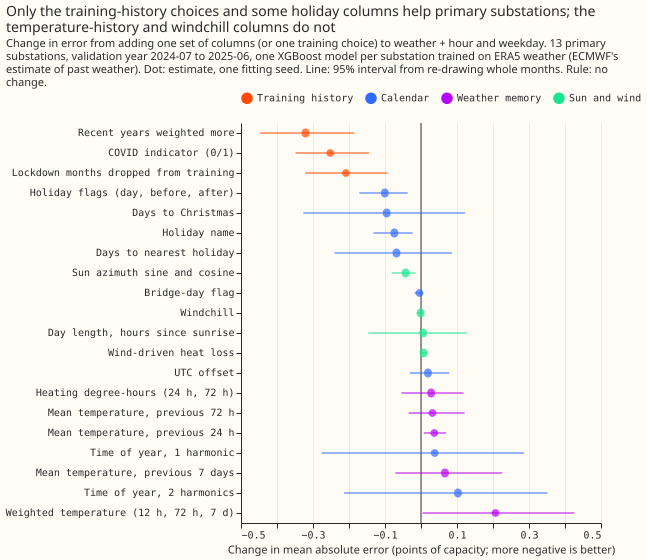
No single input beats the clock against the weather block alone. The add-one-in contrasts against W on the selection year, for Primary substations, are -0.56 for the clock, -0.29 for recency weights, -0.22 for the COVID indicator, -0.19 for dropping the lockdown months, and every other column lowers it by 0.11 or less (some raise it).
The training-history choices are as large as the best added column. For Primary substations on the selection year, against W plus clock, weighting recent years more (half-life 2 years) lowers the error by 0.32 points, the COVID indicator by 0.25, and dropping the lockdown months from training by 0.21. The graded lockdown indicator (1 for the national lockdowns, 0.5 for the restrictions between them, from approximate dates) scores 7.130 against 7.142 for the 0/1 indicator, so grading adds nothing. On the confirmation year, weighting recent years lowers the Primary error by 0.46 points (95% interval -0.53 to -0.38) more than the unweighted chosen set, and training from 2023-09 lowers it by 0.86 more than the full history (see the table above for the selection year). Adding recency weights to a 2023-09 start gains only 0.03 points (6.71 to 6.68), and adding a 2023-09 start to recency weights gains 0.43 (95% interval -0.61 to -0.24).
Two holiday columns help a little. For Primary substations on the selection year, holiday flags lower the error by 0.10 points (95% interval -0.17 to -0.04) and the holiday name by 0.07 (-0.13 to -0.02). The days to Christmas (-0.10, -0.33 to +0.12) and the days to the nearest holiday (-0.07, -0.24 to +0.09) have intervals that include zero, so only the holiday flags and the holiday name are supported. These intervals use one fitting seed and 12 months. The bridge-day flag changes the error by -0.004 points.
No weather-derived column helps Primary substations. The 24-hour, 72-hour, and 7-day trailing mean temperatures add +0.04, +0.03, and +0.07 points (the 24-hour mean is worse, with 95% interval +0.01 to +0.07), the weighted temperatures (12 hours, 72 hours, 7 days) +0.21 (0.00 to +0.43), heating degree-hours +0.03, the day length and hours since sunrise +0.01, the UTC offset +0.02, and wind-driven heat loss +0.01. The mean of the 3 by 3 block of cells around the nearest cell, in place of the nearest cell, changes the error by -0.01 points. Sun azimuth as sine and cosine lowers it by 0.04 points (-0.08 to -0.02), too small to matter.
Time of year shows no detectable gain in the full weather block. One harmonic of the day of the year adds +0.04 points (-0.28 to +0.29), two harmonics +0.10, and the month as a categorical +0.09 against the weather block plus clock. The intervals allow a gain of up to about 0.3 points.
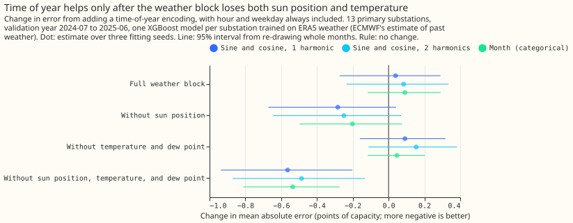
The masking ablation removes the columns that could carry the season, and time of year then helps. Time of year lowers the Primary error only when the weather block loses sun position and temperature together: -0.56 points (95% interval -0.94 to -0.20) with one harmonic, -0.49 with two, and -0.54 (-0.81 to -0.27) with the month as a categorical. Removing only the sun position gives -0.28 (-0.67 to +0.04), and removing only the temperature and dew point gives +0.09 (-0.16 to +0.32). This supports the explanation that the sun and temperature columns carry the season, for the Primary substations only. A coarser encoding (one harmonic, or month) does no better than a finer one, so the data give no sign that a fine day-of-year encoding lets the trees memorise individual weeks of the training years. In the full weather block, the permutation importance of the sun position and the temperature is large (see below).
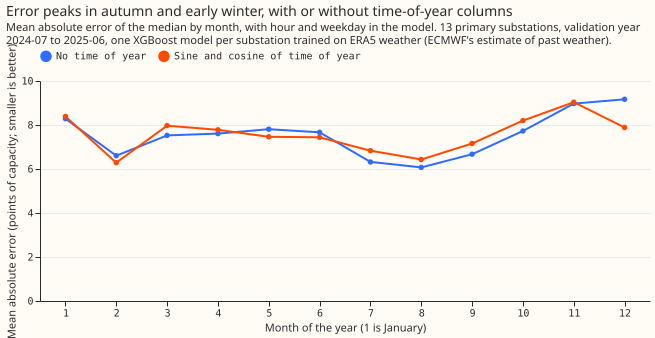
Without a time-of-year column the error is highest in November, December, and January, and the one-harmonic column removes December from the worst months. Without the column, the Primary error on the selection year is lowest in July to September (about 6.1 to 6.7) and highest in November (8.97), December (9.17), and January (8.29). The one-harmonic column lowers December by 1.3 points (9.17 to 7.89) and raises July by 0.5 and October by 0.5, without removing the seasonal shape.
The unwindowed Christmas column also acts as a half-year flag
days_to_christmas as built also flips sign every late June, so it separates January to June
from July to December. The signed distance to the nearest 25 December is clipped at 14 days, and
outside the window the clipped value takes the sign of the nearest Christmas. A code reviewer
found this after the confirmation year had been scored, and the control was run on all three
folds. The column keeps its place in the frozen set, and the control is post hoc. Each row is the
change in Primary error against the weather block plus clock plus COVID indicator, with 95%
intervals and three fitting seeds:
| Encoding added | Selection year 2024-07 to 2025-06 | Second selection year 2023-07 to 2024-06 | Confirmation year |
|---|---|---|---|
days_to_christmas as built |
-0.14 (-0.36 to +0.06) | -0.18 (-0.44 to +0.09) | -0.13 (-0.36 to +0.11) |
| Days to Christmas inside a 14-day window, otherwise missing | -0.11 (-0.26 to -0.01) | -0.14 (-0.39 to +0.03) | -0.10 (-0.25 to +0.02) |
| Half-year flag only | -0.04 (-0.19 to +0.12) | -0.10 (-0.35 to +0.14) | -0.03 (-0.21 to +0.15) |
| One harmonic of time of year | -0.06 (-0.33 to +0.18) | +0.01 (-0.36 to +0.36) | -0.15 (-0.42 to +0.14) |
| Holiday flags | -0.10 (-0.17 to -0.04) | -0.06 (-0.17 to +0.02) | -0.07 (-0.14 to -0.02) |
Averaged over the year, the data cannot separate a Christmas effect from the half-year step. The windowed column keeps three quarters of the point-estimate gain of the column as built, and the half-year flag alone gains under 0.1 on every fold, but no paired test between these point estimates was run, and every interval of the Christmas column includes zero except the windowed column on the selection year. Only the holiday flags have intervals that exclude zero on two of the three folds. The days to the nearest holiday (clipped at 7 days) has a milder version of the same half-year step, because England has no bank holiday between late May and late August. The next section scores the columns inside the Christmas weeks themselves, where the half-year flag does not reproduce the gain, so the gain there is a Christmas effect.
The Christmas columns cut the error at Christmas, and the Easter and summer windows show little
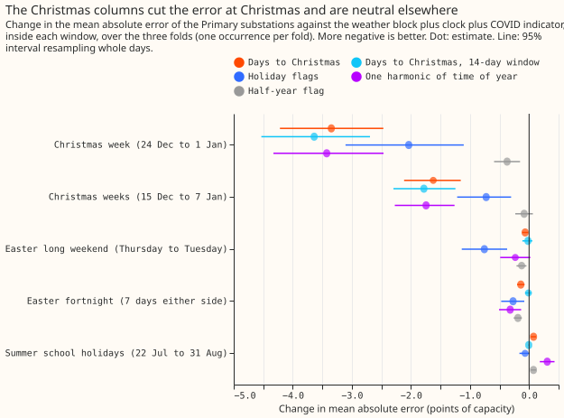
Over 15 December to 7 January the days to Christmas lowers the Primary error by 1.62 points, in each of three years, against 0.13 over the whole year. A column can help on a few hard days and hardly move a yearly average, and the NGED forecasts are most needed on such days. This check was run after the experiment and none of it was pre-registered. It reads the Christmas-control predictions (three folds, three fitting seeds, every substation type) and cuts the valid times into calendar windows by local date. Each window has three occurrences, one per fold, and neighbouring days are correlated, so the 95% intervals, which resample whole days, describe these three years only. Primary substations are harder to forecast at Christmas: the base error (the weather block, clock, and COVID indicator) is 9.66 points over 15 December to 7 January and 11.23 over 24 December to 1 January, against 7.52 on the other days.
| Primary, change in error against the base | 24 Dec to 1 Jan (27 days) | 15 Dec to 7 Jan (72 days) | Other days (859 days) |
|---|---|---|---|
| Days to Christmas as built | -3.35 (-4.21 to -2.51) | -1.62 (-2.12 to -1.17) | -0.06 (-0.10 to -0.02) |
| Days to Christmas, 14-day window | -3.64 (-4.55 to -2.73) | -1.78 (-2.30 to -1.26) | 0.00 (-0.01 to +0.02) |
| Holiday flags | -2.04 (-3.07 to -1.10) | -0.73 (-1.20 to -0.30) | -0.02 (-0.03 to 0.00) |
| One harmonic of time of year | -3.43 (-4.33 to -2.50) | -1.74 (-2.25 to -1.25) | +0.04 (-0.02 to +0.10) |
| Half-year flag | -0.37 (-0.60 to -0.15) | -0.08 (-0.24 to +0.06) | -0.06 (-0.10 to -0.02) |
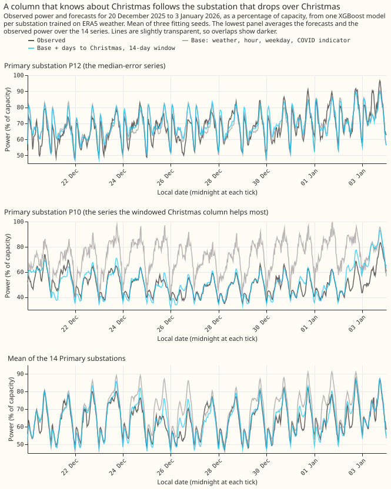
Over Christmas 2025 the windowed Christmas column follows a substation whose power drops there, and the base set does not. The figure shows 20 December 2025 to 3 January 2026 in the confirmation fold, for P12 (the median-error series), for P10 (the series the windowed column helps most, chosen after the fact from the outcome), and for the mean over the 14 Primary series. It draws the observed power, the base (weather block, clock, COVID indicator), and the base plus the windowed column; the errors of the other configurations are given here and not drawn. Over the window, the mean absolute error of the base is 3.96 points of capacity for P12 and 22.23 for P10, and adding the days to Christmas gives 3.92 and 4.43, the windowed column 3.95 and 4.13, the holiday flags 3.87 and 18.40, and the half-year flag 4.01 and 21.13. P12 is almost unaffected, so the Christmas gain comes from a subset of series. The error of the 14-series mean is 5.15 for the base, 2.84 with the days to Christmas, 2.62 with the windowed column, 3.70 with the holiday flags, and 5.01 with the half-year flag. The holiday flags capture only the bank-holiday days, so they miss the days either side of them, which the days to Christmas covers.
The gain is a Christmas effect, because the half-year flag does not reproduce it. The half-year flag lowers the error by 0.08 over 15 December to 7 January, and the days to Christmas by 1.62. The gain holds in each year: the change over 15 December to 7 January is -2.44, -1.29, and -1.14 for the folds that start in 2023, 2024, and 2025 for the column as built, and -2.84, -1.32, and -1.18 for the windowed column, against base errors of 9.60, 9.46, and 9.92. For GSP the windowed column lowers the error by 2.45 over 15 December to 7 January (-3.73 to -1.21), and by 5.99 over 24 December to 1 January (-7.80 to -4.24). For BSP it lowers it by 0.35 (-0.85 to +0.11) and by 1.45 (-2.41 to -0.48), and the BSP holiday flags lower it by 0.59 (-1.02 to -0.21) over the longer window.
The windowed column keeps the Christmas gain and removes the summer harm. The unwindowed column raises the error in the summer school holidays (22 July to 31 August) by 0.08 points for Primary (0.03 to 0.12), 0.43 for BSP (0.30 to 0.58), and 2.22 for GSP (1.64 to 2.78), because it flips sign in late June. The windowed column changes the summer error by -0.01, -0.01, and -0.06. On all other days it changes the error by 0.00 for Primary, -0.04 for BSP, and +0.12 for GSP (0.02 to 0.24). The one harmonic of time of year matches the Christmas gain but raises the summer error by 0.31 for Primary, 2.13 for BSP, and 3.84 for GSP, so it is not a substitute.
The holiday flags help Primary substations at Easter and hurt BSP and GSP. Over the Easter long weekend (the Thursday to the Tuesday, 18 days) the flags lower the Primary error by 0.76 points (-1.14 to -0.37) and raise the BSP error by 0.52 (0.08 to 0.89) and the GSP error by 1.09 (-0.51 to +2.67). The Christmas columns change the Primary error by under 0.1 at Easter. The effects are small for a period that is six days a year, so the single set leaves the flags out.
School holidays are not tested, because no column encodes them. The summer window row shows that no existing column helps in the summer school holidays: the holiday flags change the Primary error by -0.07 (-0.17 to +0.01) and the other columns raise it. A school-term column, by nation or by local authority, would need dates collected by hand, and is listed under untested ideas.
Windchill changes nothing, so its production code can go
Neither windchill formula changes the error. The guarded Environment Canada formula changes the Primary error by +0.003 points (-0.011 to +0.016, 99.4%) against W. Production's expression, which has no guard on its valid range, changes it by -0.002 (95% -0.016 to +0.010) against W and by -0.007 (-0.022 to +0.005) against W plus clock. For GSP the unguarded expression changes the error by -0.045 (-0.14 to +0.04) against W, a wider interval from two series. The wind-driven heat loss (wind speed times the shortfall of temperature below 15.5 °C) changes the Primary error by +0.007 points. The test covers ERA5-trained XGBoost models on 13 to 14 Primary series and two each of BSP and GSP. Issue #1199 (Remove the windchill feature from the production feature code) asks for the production windchill code to be removed.
Pooled models against one model per series
One XGBoost model per series scores lower than one XGBoost model per substation type on Primary substations, by a small and unpaired margin. A pooled model needs the series identifier as an input. Without it, the pooled Primary model scores 11.79 on the confirmation year against 7.57 for the per-series model, both with the Primary set, because the series have different levels of power over capacity. With a categorical identifier and the same columns plus recency weights, the pooled model scores 7.34 against 7.11 for the per-series model, and the 95% intervals overlap (7.08 to 7.65 and 6.84 to 7.40). A categorical identifier scores 0.23 points lower than an integer code for Primary (7.34 against 7.57, with recency weights), and the two are identical for BSP and GSP, which have two series each. The selection-year comparison points the same way (7.11 pooled against 6.92 per series). For BSP and GSP, two series each, the pooled model with an identifier and recency weights scores slightly lower than the per-series model (BSP 8.93 against 9.06, GSP 23.91 against 23.97 on the confirmation year), so the margin is specific to Primary. No paired interval was computed, so the margin is not established, and the feature sets were chosen with per-series models only.
What the model uses
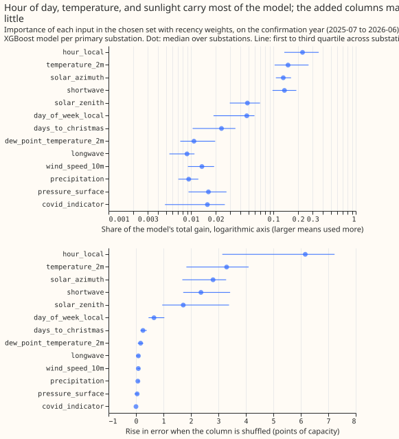
Hour of day, temperature, and the sunlight columns carry most of the Primary XGBoost models.
Across the 14 per-series models of the Primary set with recency weights, on the confirmation year,
shuffling hour_local raises the validation error by a median of 6.2 points, temperature_2m by
3.3, solar_azimuth by 2.8, shortwave by 2.4, solar_zenith by 1.7, day_of_week_local by
0.65, and days_to_christmas by 0.25. Gain shares, which favour columns with many distinct values,
put hour_local (median share 0.23) first, followed by temperature_2m (0.15), shortwave
(0.14), and solar_azimuth (0.13). covid_indicator scores 0.0 on permutation because it reads 0
in every validation month; its value is in quarantining the lockdown months during training. For
the pooled Primary XGBoost model (categorical identifier, recency weights), the series identifier
has the largest permutation importance (7.9, gain share 0.38), followed by hour_local (5.1),
temperature_2m (3.0), shortwave (2.9), solar_azimuth (2.3), solar_zenith (1.6),
day_of_week_local (0.7), and days_to_christmas (0.2). Importance is descriptive: the planned
contrasts, not these shares, are the evidence on whether a column helps. No shuffled-column noise
control was run.
Example predictions
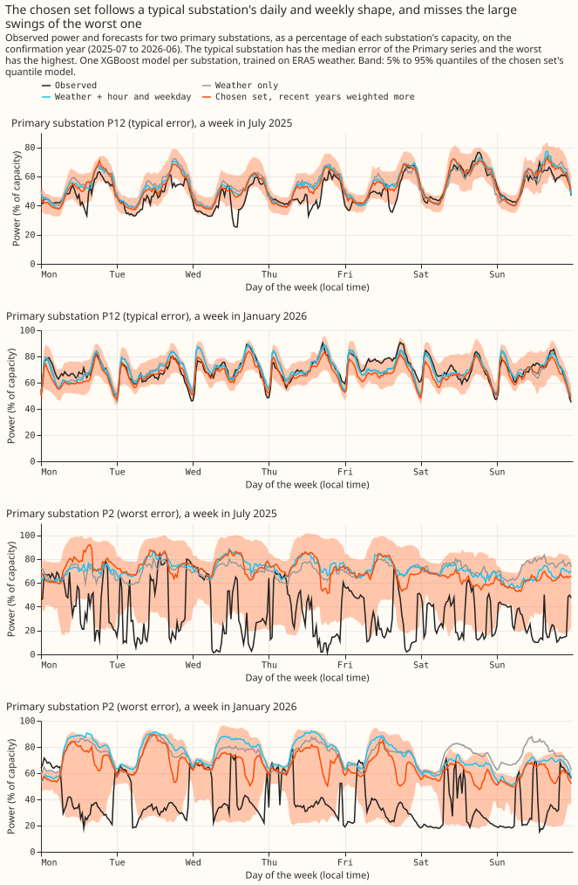
The chosen set follows the daily and weekly shape of a typical substation, and misses the large swings of the worst one. The figure shows a week in July 2025 and a week in January 2026 for the Primary substation with the median error (P12) and the one with the highest error (P2), on the confirmation year. For P12 every forecast tracks the morning and evening peaks, the weekend dip, and the January level, and the 5% to 95% band is narrow. For P2 the observed power repeatedly falls to 10% to 40% of capacity for hours at a time, which none of the weather, clock, or holiday columns explains. The cause is not tested here. The three point forecasts stay near 60% to 90% of capacity, and the quantile band widens to cover the swings only partly.
The daytime errors of the typical substation follow satellite irradiance
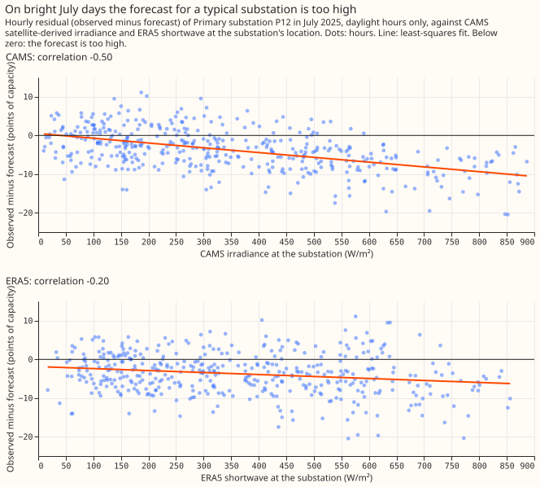
In summer, the forecast for P12 is too high in daylight and about right at night, and the gap follows satellite-derived irradiance more closely than it follows ERA5 shortwave. The residual is the observed power minus the chosen set's forecast, in points of capacity. This check was run after the experiment, to test a guess about the example above, and none of it was pre-registered. From June to August of the confirmation year the mean residual is -5.3 points between 08:00 and 17:00 and -1.0 at night, and the mean absolute residual is 6.8 points by day and 3.5 at night.
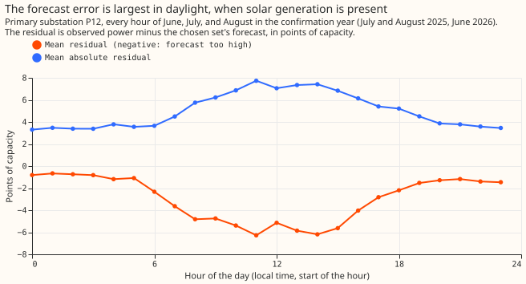
CAMS irradiance read at the substation's own location explains 25% of the variance of P12's hourly residual in July 2025, against 4% for ERA5 shortwave. CAMS is the Copernicus Atmosphere Monitoring Service's satellite-derived irradiance. Over the 431 daylight hours of July 2025 (solar zenith under 80 degrees), the correlation of the residual with CAMS irradiance is -0.50 and with ERA5 shortwave -0.20. The two irradiances correlate 0.84 with each other. A fit on both explains 43%. The hours with the most irradiance are the hours where the forecast is highest compared with the observed power, which fits embedded solar generation that the weather block does not see.
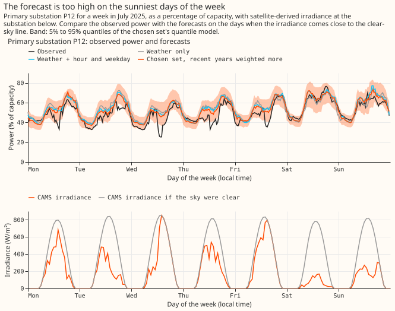
On the five weekdays, when the irradiance is above 450 W/m², the observed power dips 10 to 25 points of capacity below the forecasts, and on the cloudy weekend it does not. The dips come on Monday, Tuesday, Wednesday, Thursday, and Friday around midday and in the afternoon, and the largest is on Wednesday, when the irradiance climbs to the clear-sky line. On Saturday and Sunday the irradiance stays under 300 W/m² and the observed power follows the forecasts. The weekend is also lower demand, so one week cannot separate cloud from weekday. The week was chosen in advance for figure 7, not for this check.
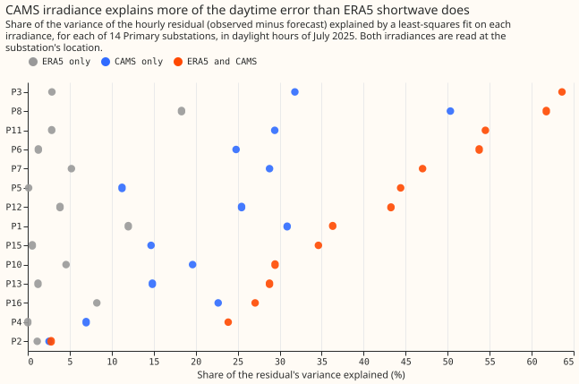
The pattern holds for the 14 Primary series that have CAMS values. Over the 14 series, CAMS alone explains more variance than ERA5 alone in every series, with a median of 24% against 3%, and both together explain a median of 40%. P2, the worst-error series in the example above, is the exception: both irradiances explain under 3% of its residual, which agrees with its error being a level shift and not a daily solar pattern. P15's residual correlates positively with CAMS irradiance (+0.38), so the sign is not the same in every series. Two Primary series have no CAMS download.
The caveats are the short span, the target, and the cause. The check covers one month and one
fitted model per series. The R squared values are in-sample fits of a line to hours that are
correlated with their neighbours. The check shows that irradiance at a finer cloud scale is related
to the residual, and not that embedded solar is the cause, or that a feature built from forecast
irradiance would close the gap: CAMS is observed after the fact, so a forecast-time feature would
use a numerical weather model's irradiance, which has not been tested here. The same check with CAMS
read at a PV site 10.3 km away gave 19% against 5% for P12, so the closer location widens the gap.
The numbers come from e00006_solar_residual.py, which reads the CAMS download at the 22 demand
locations (data/studies/downloads/reanalysis/CAMS/demand_points/).
Probabilistic scores
The nine quantile levels (0.05, 0.1, 0.25, 0.4, 0.5, 0.6, 0.75, 0.9, 0.95) give the same ranking as the median. On the confirmation year the mean pinball loss over the nine levels, in points of capacity, falls from 2.80 (W) to 2.68 (W plus clock) to 2.42 (Primary set with recency weights) for Primary, from 3.34 to 3.27 to 3.11 for BSP, and from 9.50 to 9.48 to 7.76 for GSP. The interval from the 0.05 to the 0.95 level covers 85%, 84%, and 83% of the Primary observations for the three arms, and 79%, 78%, and 81% for GSP, against a nominal 90%, so the quantiles are too narrow. Calibration is the job of stage 2, not of this experiment.
Failures and limits
- The predicted size of the clock effect was wrong. The experiment predicted at least 1.5 points from experiment 00003 and measured about 0.5. Experiment 00003 compared ENS-trained and ERA5-trained models over 22 series including battery and grid-flow series, so the two are not directly comparable.
- P8 fails at the planned level on the confirmation year. The COVID and Christmas columns together are supported at 95% only.
- The
best_armis chosen on the selection years only, because the plan bars the confirmation year from influencing choices that feed experiment 00005. The 2023-09 start, which scored lowest on the confirmation year, is reported as confirmation-only evidence. - The intervals describe these series in these months. The bootstrap resamples whole months and the fitting seed with the series fixed, so no interval generalises to other substations, and a percentile bootstrap over 12 months undercovers at 99.4%. BSP and GSP rest on two series each, so their selected sets are noisy, and the GSP error is dominated by drift, so a GSP set tuned on one year may not carry over.
- The Bonferroni family is nine contrasts per substation type, which is 27 tests across the three types.
- The sweep used one fitting seed and 12 validation months; the add-one-in intervals do not include seed variation, and 12 months is a short span for the holiday columns, which see one or two occurrences of each holiday per year.
- The series set differs between folds. Series with under a year of history before a fold's purge are left out of that fold: three of the 20 series on the selection year and two on the confirmation year, so fold-to-fold means are not directly comparable.
- The target is power over the series' effective capacity from the whole history, one constant per series. Per-series models are unaffected by a constant, and the pooled models see a mildly forward-looking scale.
- The calendar columns use the period-ending stamp, so one half-hour per day (00:00) gets the next day's weekday, holiday, and Christmas value. This is consistent between training and validation, so it adds noise and no leakage.
- No hyperparameter was tuned per arm. Every XGBoost model has 500 rounds, a learning rate of 0.05, depth 6, subsample 0.8, and no column subsampling. The thread count differs between the per-series fits (one thread) and the pooled fits.
- The first greedy run was scored on a partial results folder (the add-one-in run had not finished) and was discarded and rerun on the complete folder.
- A fit file is skipped if it exists, whatever the arm list. Selection-year fits were made
before the final inputs file was rebuilt for the graded and Christmas arms; a rebuild reproduced
every existing column exactly (checked on all float columns), so the stored fits are current. The
candidatesstage of the first selection used the superseded all-series set and is not quoted. - The ERA5 weather and the power timestamps share one convention copied from experiment 00003, and the copy reproduces 00003's ERA5 features to 0.0 on every weather column.
How the numbers were made
The scripts are in ml-experiments/00006-stage1a-demand-input-feature-sweep/. e00006_inputs.py
builds the feature table, e00006_sweep.py runs each stage (add-one-in, greedy, drop-one-out,
masking, the Christmas control, and the finals), e00006_report.py writes the tables every number
on this page comes from, and e00006_charts.py, e00006_examples.py, e00006_solar_residual.py,
e00006_special_days.py, and e00006_christmas_examples.py draw the figures. The tables,
predictions, and fits are under the private data/ml-experiments/ folder. Planned contrasts, the
masking ablation, the graded lockdown arm, and the Christmas control use three fitting seeds; the
add-one-in, greedy, and drop-one-out stages use one.
Untested ideas
From an Opus consultation, not tested because each needs outside data or hand-collected dates: an embedded-solar proxy built from the clear-sky irradiance times the embedded PV capacity of each grid supply point; school-term and half-term flags, which the special-day windows suggest are worth a direct test; cooling degree-hours; the temperature change over 24 hours; a snow flag; relative humidity or apparent temperature; days since the last clock change; sporting and broadcast events; and the substation-type and customer-mix fields. A follow-up could also test a measured lockdown size (the Oxford stringency index or Google mobility) against the recency weights, since recency weights beat the 0/1 indicator on Primary here.
Lessons for later experiments
- Choose the training window and lockdown handling before adding columns, and do not add their gains together. Recency weights and the COVID indicator lower the Primary error by about half as much as the clock on the selection year, and both act on the same lockdown months. A 2023 start lowers it more than the clock on the confirmation year only, and also removes the COVID indicator's training rows.
Plan
Question. This experiment does not forecast. It trains on ERA5 weather and scores on held-out ERA5 months, predicting the observed power at the same valid time. The question is which non-lag inputs make the best weather-to-power model. Every input must also be computable at forecast time, for the next 15 days, from the calendar and from forecast weather. No observed-power lag is used.
Series. The 20 series of TimeSeriesMetadata whose substation_type is in
SUBSTATION_TYPES: 16 Primary substations (P1 to P16), 2 bulk supply points (B1, B2), and 2 grid
supply points (G1, G2). Generators, batteries, and the HV and EHV customer series are excluded.
Power is the cleaned power (scan_cleaned_power, unflagged rows), divided by the series' effective
capacity from the fold A frames. Labels come from a seeded permutation inside the experiment; no
identifier, name, or coordinate is published.
Weather. ERA5 from the 121-cell stage 1 box, at the cell nearest each series, resampled to the
half-hourly period-ending grid with the same convention as experiment 00003 (ssrd and fdir
clipped at zero; accumulations are totals over the hour ending at the stamp). The script copies
that convention because an experiment may not import another study's folder, and checks its
output against 00003's stored ERA5 features for the same series. One arm replaces the nearest cell
by the mean of the 3 by 3 block of cells around it.
Weather block W (9 columns): shortwave, longwave, temperature_2m,
dew_point_temperature_2m, pressure_surface, precipitation, wind_speed_10m, solar_zenith,
and solar_azimuth. Every column is a function of forecast weather and the clock, so it is
available at forecast time.
Folds. The experiment feeds the lag experiment 00005, which validates on 2025-07 onwards, so no choice may be influenced by that year. Selection fold: validate on 2024-07-01 to 2025-06-30, train on ERA5 from 2019-09-01 to one week before validation (and, for the recent-start variants, from 2023-09). A second selection fold validates on 2023-07-01 to 2024-06-30 if time allows. Every add-one-in, greedy, and drop-one-out decision uses the selection folds only. The chosen feature set is then frozen and written into this page before anything is scored on 2025-07-01 to 2026-06-30. Confirmation fold: the frozen set, the weather block W, and W plus the clock are scored once on 2025-07-01 to 2026-06-30, training up to one week before it, and reported as confirmation and not as selection. No valid time on or after 2026-07-01 is scored.
Models. Two configurations, each run for every arm.
- One XGBoost model per series.
- One XGBoost model per substation type (Primary, BSP, GSP) with the series identifier as an input, both as a categorical column and as an integer code. The two encodings are run for W and for the best set only.
XGBoost settings are identical in every arm: eta 0.05, max_depth 6, 500 rounds, subsample 0.8,
colsample_bytree 1.0, colsample_bynode 1.0 (column subsampling would give a wider set a free
win). The first pass uses the absolute-error objective, whose fitted value is the median. The 9
quantile levels (0.05, 0.1, 0.25, 0.4, 0.5, 0.6, 0.75, 0.9, 0.95) are run for the finalists, and
the pinball loss is reported then. The first pass uses one seed; the finalists use three.
Arms (each adds the listed columns to W, one at a time, then in groups):
- Clock:
hour_local,day_of_week_local. - Time of year: sine and cosine of the local day of the year, with one harmonic and with two. The encoding is periodic, so a new year reuses the same values.
- Holiday, five arms: the holiday name as a categorical (England and Wales, from the
holidayspackage); the holiday flag with day-before and day-after flags; the signed days to the nearest holiday, clipped at 7; the signed days to 25 December, clipped at 14; a bridge-day flag (a working day between a holiday and a weekend). Holidays are known years ahead. - Trailing temperature, four arms: the mean temperature over the previous 24 hours; 72 hours; 7 days; and exponentially weighted means with half-lives of 12 hours, 72 hours, and 7 days. The window ends at the valid time. At forecast time the window straddles analysis and forecast weather and would be built from one member's trajectory.
- Heating degree-hours: the mean over 24 and 72 hours of the excess of 15.5 °C over the temperature.
- Sun position: day length and hours since sunrise (local); and the sine and cosine of the azimuth. Sun elevation is 90 degrees minus the zenith, a monotone function a tree treats as the same column, so it is not tested.
- UTC offset: 0 or 1 hour.
- Windchill: the Environment Canada formula, equal to the temperature above 10 °C or below 4.8 km/h, and the product of the wind speed and the shortfall of temperature below 15.5 °C. Both are implemented inside the experiment script only.
- COVID: a 0/1 indicator for 2020-03-23 to 2021-07-19, reading 0 in every validation month; an arm that excludes those training rows; and an arm with recency sample weights (half-life 2 years).
- Spatial mean: the 3 by 3 block mean replaces the nearest cell for every weather column.
Extra inputs from an Opus consultation. Taken: the exponentially weighted temperatures, the heating degree-hours, the spatial block mean, the bridge-day flag, and the replacement for windchill. Not taken, and listed in the write-up as untested: an embedded-solar proxy (needs an outside capacity series), school terms (dates must be collected by hand), cooling degree-hours, temperature change over 24 hours, snow, humidity, days since the clock change, sporting events, and the substation-type fields.
Planned contrasts (mean absolute error of the median, points of capacity, one model per series; the interval resamples whole validation months). P1 to P7 are scored on the selection fold. P8 and P9 are scored on the confirmation fold, and P8 is the one contrast the frozen set must pass.
- P1: W plus clock minus W.
- P2: W plus clock plus one harmonic minus W plus clock.
- P3: W plus clock plus the holiday flags minus W plus clock.
- P4: W plus clock plus the 24-hour trailing mean minus W plus clock.
- P5: W plus windchill (the formula) minus W.
- P6: W plus clock plus the COVID indicator minus W plus clock.
- P7: W plus clock with recency weights minus W plus clock.
- P8: the frozen set selected on the selection fold minus W plus clock.
- P9: the selected set trained from 2023-09 minus the same set trained from 2019-09.
Every other number is exploratory and labelled so: the add-one-in arms against W and against W plus
clock, the drop-one-out, the pooled configurations, the second selection fold, and the breakdowns by
type, hour, and season. A month-by-half-hour climatology (ClimatologyForecaster) is the reference
row. Absolute scores are reported for every arm.
Not tested here. Lagged power, forecasting from ENS weather, and downloaded COVID series (Oxford stringency, Google mobility).
Changes to the plan
The plan below is as committed before the first fit, with these changes made afterwards.
- Selection and confirmation folds. Selection used the validation years 2024-07 to 2025-06 and, for a replication, 2023-07 to 2024-06. The Primary set was written into this page before the confirmation year (2025-07 to 2026-06) was scored, and the planned set was scored once. The BSP and GSP sets, the discarded all-series set, the pooled models, the Christmas control, and the importance fits were also scored on the confirmation year and are post hoc. The plan's original wording scored the main fold first.
- The set was selected on the Primary series. The first all-series selection was replaced before the confirmation year was scored.
- Added arms: the BSP and GSP sets, a graded lockdown indicator, a masking ablation of the time of year, production's unguarded windchill, and the Christmas-window control.
- Drop-one-out ran on the Primary set on the selection year only.